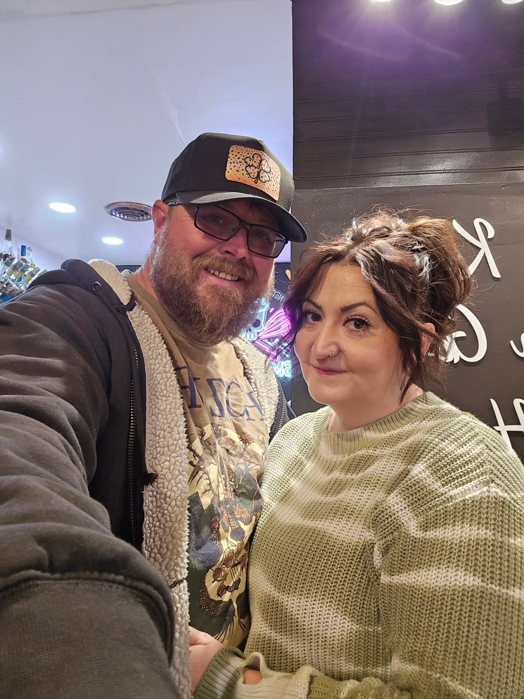
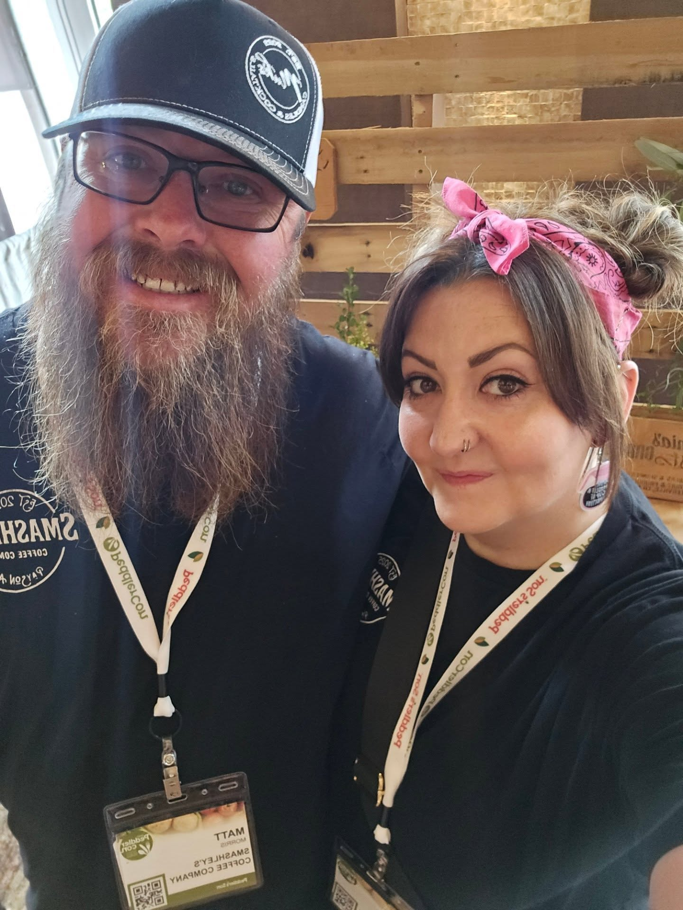

Family-Owned
Personal service and local pride shape the customer experience.
Local Story
The people behind the skull logo, the hot pink, the sprinkles, and the community-first coffee counter.
Our Story
Smashley's story started long before the coffee.
For years, Ashley was known for homemade treats, custom creations, and plenty of sprinkles. Baking became a way to bring people together and create something memorable for every celebration.
Coffee came later—but the heart behind it stayed the same.
Today, Smashley's blends handcrafted drinks, creative flavors, and a welcoming atmosphere with the same passion and personal touch that started it all.
Whether you're stopping in for your morning coffee, meeting friends, or discovering your new favorite drink, you're experiencing a story that began with creativity, hard work, and, of course, a lot of sprinkles.

Inside The Shop
Smashley's is bold drinks, fresh treats, bright flavors and a lot of personality. It is a place where Payson locals and visitors can grab a favorite, try something new, sit on the patio, meet up with friends, and feel like they walked into a shop with real heart behind it.

Why Smashley's